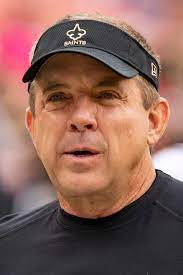

During 2010 When the New Orleans Saints won the super bowl it was investigated that the Saints were placing bounties on opponents. The members of the team would pay players to “take out” or injure a player on the opposing team.

In 2012 former New Orleans Saints defensive assistant Mike Cerullo contacted the NFL regarding a bounty program after the 2009 season. It was discovered that defensive coordinator Gregg Williams, along with other Saints coaches and players, had contributed to a pool of money that was awarded to players that either knocked opponents out of games or limited their effect on the game. During the 2009 NFC Championship Game in which the Saints won, several Vikings players and coaches claimed that the Saints were deliberately trying to hurt Vikings MPV candidate Brett Favre.
On March 2, 2012, The NFL had evidence that defensive coordinator Gregg Williams had created the "Bountygate” in 2009 and alleged that "between 22 and 27 Saints players" were involved. As a result of the actions, the NFL imposed multiple penalties on the Saints, including fines, loss of draft picks, and suspensions. Head coach Sean Peyton was suspended for the entire following season.
The league implemented new rules and policies aimed to prevent similar incidents from happening again.